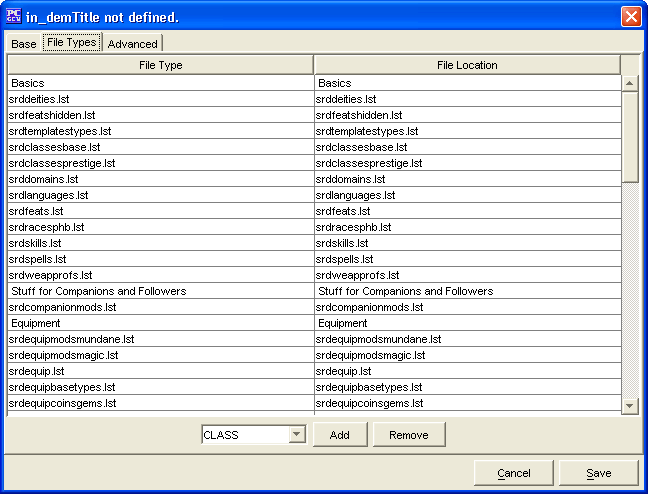

The File Type Tab allows entry of the .lst files that make up the Source. The Sources created will be saved into the data/custom directory under the name of customSources.lst.
To add new list files to the source, click on the Add button after choosing a type from the drop down box. A file browser will then appear that will allow you to select the .pcc or .lst file to add. Remove list items by clicking on the Remove button.
The Cancel and Save buttons, which appear on every tab, are used to either cancel the Source creation or save it to the customSources.lst file.